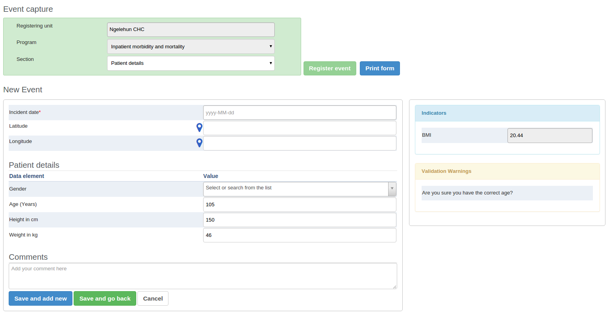

|
In the Event Capture app you register events that occurred at a particular time and place. An event can happen at any given point in time. This stands in contrast to routine data, which can be captured for predefined, regular intervals. Events are sometimes called cases or records. In DHIS2, events are linked to a program. The Event Capture app lets you select the organisation unit and program and specify a date when a event happened, before entering information for the event.
The Event Capture app works online and offline. If the Internet connectivity drops, you can continue to capture events. The events will be stored locally in your web browser (client). When connectivity has returned, the system will ask you to upload the locally stored data. The system then sends the data to the server where the data is stored.
![[Note]](../Resources/note.png)
|
Note |
|---|---|
|
If you close the web browser while in offline mode, it is not possible to reopen a new web browser window and continue the working session. However the data will still be saved locally and can be uploaded to the server the next time the machine is online and the you have logged into the server. |
-
You only see programs associated with the organisation unit you've selected and programs you've access to view through your user role.
-
Both skip-logic and validation error/warning messages are supported during registration.
-
When you close an organisation unit, you can't register or edit events to this organisation unit in the Event Capture app. You can still view and filter the event list and view the details of an event.
-
On-the-fly indicator expression evaluation is supported. If a program has indicators defined for it and the moment all values related to the indicator expression are filled, the system will calculate indicator and display the result.
 -
Sorting: this can be done by clicking the sorting icon of each column header. A red sorting icon implies the current sorting column. However, the sorting functionality works only within the page displayed. Currently, it is not possible to do sorting from serverside.
-
Filtering: this is done by clicking the small search icon shown to the right of each column header. Clicking them provides an input field to type a filtering criteria. The system starts applying the filter the moment a user starts to type. During filtering it is possible to define start and end dates for date type data elements and lower and upper limits for number types. Server side filtering is not-support at the moment.